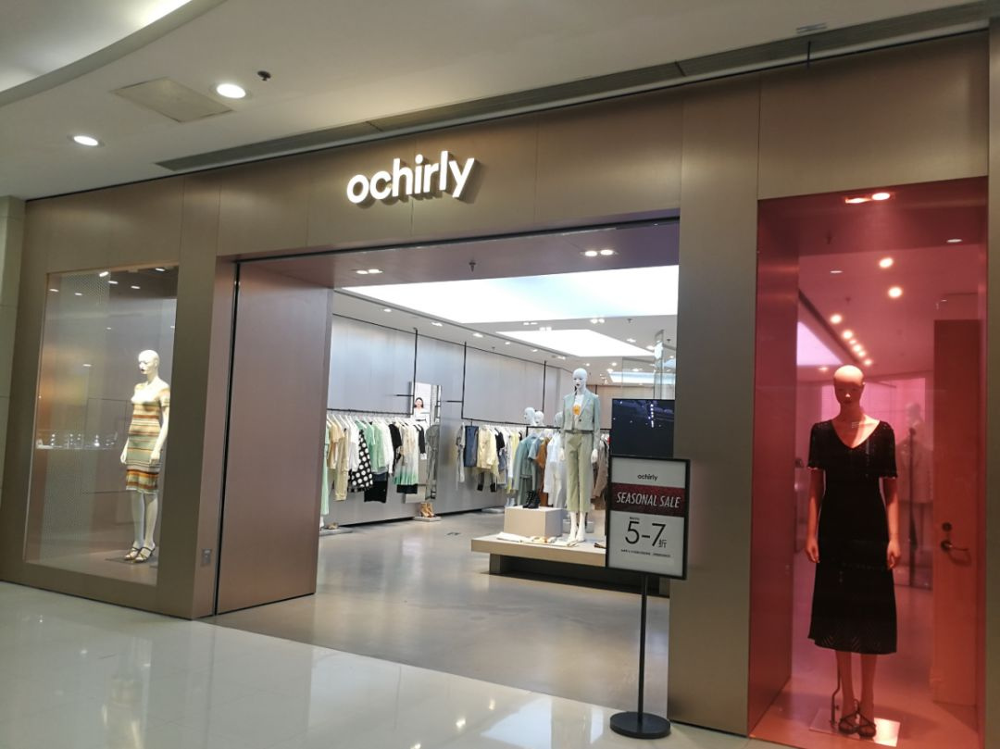
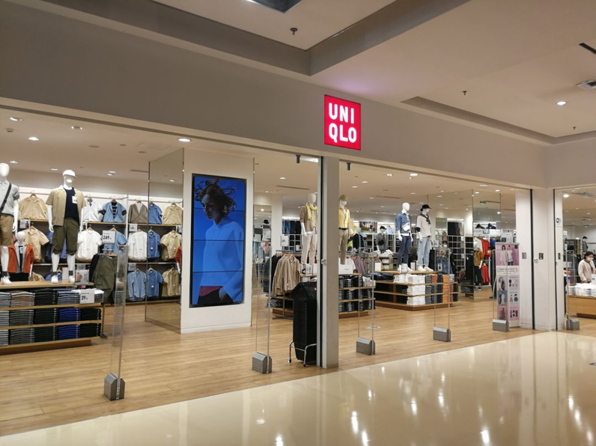
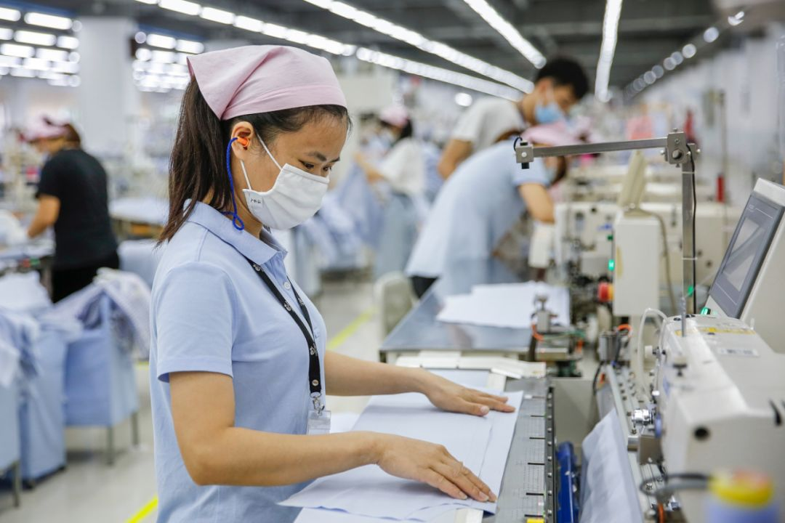

前所未有的生存危机！业内预测：这里这类公司，或在两个月内现连锁倒闭…
原文链接 备份链接 随着新冠疫情在全球的蔓延，作为韩国出口支柱之一的汽车产业正遭遇供应链脱节、工厂停工等诸多难题。截止到25日凌晨，韩国新增确诊病例100人，再次攀升到三位数，韩国疫情还不能算稳定。疫情对韩国汽车产业影响如何？在首尔的财经 …

中国服装消费市场还未恢复，爆发的欧美疫情又打击了海外消费市场，内贸和外贸都处于不确定中，高度依赖全球服装产业链的中国老板们面临考验
文 | 《财经》记者 马霖 韩舒淋
编辑 | 余乐
从无法复产复工，担心交期延迟，到如今复产复工了订单却被取消，3月中旬以来，中国服装厂老板们的心情跌宕起伏。
《财经》记者采访的服装厂、鞋厂、纱线厂、面料厂老板们都表示，前段时间国内疫情所造成的物流阻断、工人无法返工、原材料短缺等问题现在已经缓解。最近一周多，工厂面临的最大问题已经从“愁复工”转变为“愁订单”。
随着欧美国家成为新冠肺炎重灾区，外贸市场出现了180度的转变。1月-2月中国疫情严重、无法生产，海外客户急催订单。现在欧美消费市场追随中国市场走向低迷，品牌客户变得谨慎，纷纷取消、推迟3月-6月的订单，6月之后的行情也尚难判断。
浙江一家家纺面料厂的老板邹兴（化名）告诉《财经》记者，外贸圈的老板都在感慨，与疫情抗争，“国内打上半场，国外打下半场，外贸人要打全场。”
批发商、品牌商的压力也很大。大量春款和部分夏款已经到仓库、门店，如果长期销不出去，现金流会吃紧。
“疫情爆发以来，中国服装产业链遭受了巨大打击，从终端零售到产业链中每个环节打击都非常大，出口订单减少是一个连环打击。”安迈企业顾问有限公司中国区高级董事高欢对《财经》记者说。
面对困难形势，各个服装企业都在积极谋求对策，如拓展电商渠道、加大内销比例等，大部分企业主都表示，目前的首要目标就是先存活下去，等待疫情结束后的消费复苏。
 朝阳大悦城H&M店已经开始对春夏产品进行打折。摄影／《财经》记者马霖
朝阳大悦城H&M店已经开始对春夏产品进行打折。摄影／《财经》记者马霖

加入打折阵营的还有欧时力。不过据记者观察，打折尚不是普遍现象。摄影／《财经》记者马霖

朝阳大悦城优衣库门店依然门可罗雀。摄影／《财经》记者马霖
春夏订单被取消
据《财经》记者了解，目前阶段，各服装厂和原料厂的复工率在80%以上。除湖北籍工人，全国其他省份工人基本都已复工，复工复产已经不是问题。“现在的问题是复工了，有原料，有产能，但是客户突然开始减单。”为Zara、H&M、Max Mara等欧洲品牌供货的成衣厂老板罗淼（化名）告诉《财经》记者。
罗淼表示，近期H&M等品牌客户已经取消了5月的订单，其中H&M取消的订单是一批晚夏和秋天的服装，“现在还说不清因疫情影响一共会取消多少订单。”她表示，Zara和H&M在缅甸也相继取消了30%-40％的订单，还有一些订单悬而未决。
包括罗淼在内的工厂老板们表示，最近一周，同行们都在互相通电话，或者在微信群里了解情况。他们相继收到来自客户的类似通知，“货暂停”、“取消订单”、“后续生产暂缓”。
中国是服装纺织出口大国，有全球最完备的服装产业链，产值占中国外贸顺差的70％，全球60％的服装成品在中国生产，20%的纺线、布料、拉锁纽扣等半成品国际贸易与中国有关。罗淼说，与这条产业链结合最紧密的就是国际品牌代工厂，这些工厂的老板们这几天都非常焦虑，担心欧美市场持续萧条。联合国贸易与发展会议报告显示，2月期间，由于疫情造成中国生产、物流堵塞，半成品短缺，全球服装纺织相关行业已遭受超15亿美元的损失。
为Diesel、Calvin Klein等牛仔时装品牌代工的工厂老板刘博奇（化名）告诉《财经》记者，工厂60%的牛仔裤出口欧洲、美国、加拿大等国，他在中国和柬埔寨都有工厂，目前做美国、加拿大单的中国工厂已经遭遇订单减半的情况，而柬埔寨工厂此前接到的西班牙品牌Zara的单子已经全部停掉。
“停单很彻底，没出的货不让出，现在西班牙很多地方已经封城，单子停多久还无法预测，这对我们来说是比较严重的影响。”刘博奇还担心那些减半的单子，最终会整个取消。
由于中国消费市场的恢复才刚刚开始，国内客户的订单也不理想。刘博奇说国内客户也有喊停订单，或者采购价打折的情况。很多工厂既做外贸单，也做国内单，老板们表示，国内市场疫情爆发期间影响就很大，此前许多线下销售的大品牌已经暂停了不少没投产或正在生产的订单。
1月-2月接到的订单让刘博奇的工厂目前仍可满负荷运转，但已经停的单会直接影响他的工厂5月-6月的生产。浙江一家鞋厂老板刘克余（化名）告诉《财经》记者，工厂排单减少，生产的一道道工序却都不能缺人。他现在已经把产量降低，让工人晚上不加班，“这么去处理，各方面的成本都增加了。”
市场冷，刘克余的经销商也不敢进货，“年前批发商拿到手里的货已经压在他们手里，他们宁愿跳过这个季节不销售，经销商上半年亏损会比较大。”
王福斌（化名）是天津一家服装外贸公司老板，它与十几家工厂合作，这些工厂100％依靠海外代工，客户以Zara母公司Inditex旗下品牌、H&M，以及欧洲当地品牌为主，外贸遇冷对它们的打击很大。
他表示，工厂春节前收到的订单本来应该2月做，但一直没复工，目前这些订单让工厂产能饱和，但因为不少客户将3月、4月没做的订单全部取消，4月开始就会出现因订单减少而产能过剩的情况。
罗淼也说，3月一些工厂还在生产1月、2月的订单，“但到4月就会很难受了，一些品牌春夏未必会有很多新款产生，夏季可能会以倾销为核心，相当于上半年的销售已经打了水漂。”罗淼说。
为优衣库等品牌代工的工厂老板江明德（化名）告诉《财经》记者，现在做日本市场的工厂比做欧美市场的工厂好过一些，但包括优衣库在内的日本客户也不敢下秋冬订单，也会缩减订单。据日本财务省贸易统计，2月来自中国服装及附属产品的进口额减少了65.7％。
江明德说，品牌的春夏款基本已经“废掉”，春天的款压在手上，夏天的款能缩减就缩减，品牌会把春天的库存推到秋天去卖，无法像往年那样去预测秋冬的货，也有把原有大单拆成小单的情况，“原来一万件一个款的，现在只能先下一千件，看情况再继续下单，去保证自己的安全性。”
由于缺订单，邹兴的几位同行和下游工厂已经准备4月1日开始放假，他觉得今年疫情对可选消费品的影响会很大，下降幅度可能超过1998年和2008年两次金融危机时的降幅。邹兴的供应商手上还有布匹在染厂，但客户已经取消这些订单，他说没办法，只能把布拉回来，“现在停的话亏，不停的话亏更多。”他表示，有上游原料企业已经开始亏损。
影响波及服装上下游、国内外
欧美疫情影响了服装外贸的春夏订单，做冬季服装的老板也担心受到波及。
尽管羽绒服的销售季节在晚秋和冬季，但一位羽绒服生产厂老板表示，自欧洲疫情暴发以来，他的心一直悬着，“我担心疫情控制不住，订单会被取消。”这家工厂的欧洲客户分布在意大利、法国、西班牙、德国、英国等国家，这些国家近期受疫情影响严重。
老板曹辉（化名）告诉《财经》记者，目前向意大利寄送样品、资料已经比较困难，他担心法国等其他国家陆续也会出现困难。“之前和意大利客人联系的时候，他们都很无所谓的样子，现在开始紧张了，让我们寄口罩，我们寄出去了很多口罩。”
曹辉的工厂除羽绒服，也生产其他外套产品，他表示，已经有美国客户告诉他情况很糟糕，本来预期4月出货一批薄夹克产品，这位美国客户告诉他需要时间考虑要不要生产这批货。
羽绒服的单一般是3月-4月接，6月-8月出货。他说最近客户下了一部分订单，但他不放心，希望客户能支付定金，一些客户愿意，一些不同意。
客户原则上不能取消已经生产的订单，但曹辉担心疫情对欧美市场产生更多负面影响，如果消费信心持续下滑，客户还是会取消订单，所以他选择将货期往后拖，暂不生产，继续观察客户国家的情况，如果疫情有好转，再进一步协商生产计划。
影响也在向上游传导。天虹纺织是全球最大包芯棉纺织品供应商之一，其徐州工厂是做纱线的中型工厂，该工厂一位工作人员告诉《财经》记者，出口导向的中国服装产业链受欧美疫情影响很大。纱线是服装的上游原材料，织布厂采购纱线织布，再将布匹售给印染厂，印染厂将布供应给服装厂。此次疫情首先影响成衣的内销和出口订单，影响再传导到上游印染、面料，再触及织布，织布反馈到纺纱。“现在上游纺织、印染、面料，以及下游服装企业态度都很谨慎，不像往常那样做大规模采购原材料的规划。”
目前纱线的上游原材料棉花的价格也在下跌。据中国棉纺织行业协会数据及期货数据，近期棉纱价格、棉花价格都在下行。
中国为东南亚工厂提供大量原料半成品，疫情对东南亚供应链也造成了打击。在中国和东南亚有多家工厂的大型服装生产商溢达集团全球营运董事总经理童成告诉《财经》记者，疫情在全球持续，多个国家实施更严厉的防疫政策，甚至要求生产非必需品的企业短暂停工，这对其马来西亚、斯里兰卡和毛里求斯海外生产线造成了一定影响。
不仅是外贸，疫情对内销市场的影响还在延续。
巴拉巴拉是森马集团旗下儿童服装，为该品牌提供ODM（设计＋生产）服务的工厂老板告诉《财经》记者，巴拉巴拉此前告诉工厂，没操作的订单全部暂停，已经操作出货、2月应付的款拖到现在还未结，要等到4月才能结款。该品牌此前也要求供应商帮忙卖货，给供应商排名，其副总裁也做起了直播。
上述工厂老板表示，巴拉巴拉、太平鸟、七匹狼等开了大量实体店的国内品牌，目前压力都很大。很多品牌急于出货，老板带头在朋友圈里以低于成本的价格销售。为求生存，一些品牌已开始裁员。
高欢表示，一些工厂是在拖欠下游原料生产厂家账款、拖欠工人工资的情况下经营。外贸商王福斌说，品牌与工厂的交易是赊销模式，运作订单2个-3个月，出货后2个-3个月回款，长期没有进项，工厂要垫资运作、支付人工，如果财务状况不佳，在此次疫情期间或许会难以维持。
工厂急寻对策
疫情冲击着服装消费和行业人的生存状态，工厂老板们都在调整心态，一些老板表示，2020年不求赚钱，只求保本。“今年生存是硬道理，全公司最低要求是成本减20%，不亏钱就行。”刘博奇说。
老板们表示，欧美疫情爆发后，受打击最严重的是传统外贸商，也就是国内销售渠道、电商渠道开拓不足的单一贸易工厂。
曹辉的羽绒服工厂60%-70%依靠出口，疫情期间，除了尽可能压缩成本，他也在试着拓展国内市场，但这并不容易。“我们在国内经验不多，市场拓展得不是很好。”
江明德在外贸之外，做过12年内销，开过服装店，有自己的品牌和较稳定的电商渠道，不完全依赖贸易出口。因为欧洲客人基本都暂停了订单，曹辉等给欧美大牌做贴牌的同行找到他，希望开发一些产品，在他的国内渠道销售。
他表示，现在工厂都寄希望于不受线下束缚的电商平台，想拿线上品牌的单子，例如Babycare、全棉时代等国内品牌，但他说，这些品牌近来也在拼命压价，即使做电商，工厂的日子也并不容易。
从未尝试过电商渠道的王福斌，2月紧急成立了电商团队，并注册了自己的品牌，开始摸索电商的做法。
罗淼的工厂目前也盯紧国内电商和新兴品牌，电商品牌卖时令产品，比大品牌以季节更新产品的反应更快，对供应链需求大。但她说，即使对于电商品牌，减量减款也无法避免，只能通过市场营销，去寻求减量情况下的增量。
决定服装行业老板们命运的仍然是欧美等国对疫情的控制程度，以及中国、欧美、日韩等各个经济体消费信心的恢复。“疫情控制不住，市场是没有购买力的，现在只能做好能控制的事情，比如把手里接下里的订单保质保量的出货，再看看有没有国内销售的可能性。”王福斌说。
刘博奇也认为，不能寄托太大希望于电商，他的电商业务自春节起一直没停，但销量依然比往年减半。“电商有销量，是因为电商开门，线下关门，这个不是需求，是习惯性消费，看的人多了自然会有销量，但是单量还是下降的。”他认为，只有消费者可以出门去逛去看，有机会穿着新衣服去社交，消费力度才起得来。
但他认为，为应对疫情的冲击，一些老板的确开始转变思路，这是积极的一面。“最大的改变是以前不敢做线上，觉得线上线下价格不一，线上难做的老板，开始做线上，做抖音，这是一种突破，为未来转型做尝试。做服装本来就没有轻松的日子，现在是在困境里面再去创造，看看有没有突破。”
疫情也推动了刘博奇的工厂重新审视所有项目组和工作环节，推动了在线、移动办公等内部改革。以前几个公司的人去一个地点开会，现在用视频会议和企业微信发文档，一个小时的会减到半个小时搞定。工作中一些无价值的环节也被砍掉了，IT化、系统化程度提高，订单完成速度也在提升。
2019年一些大品牌还不屑于尝试直播带货、内购，现在因为线下客流迟迟不恢复，没有选择，需要尝试各种线上带货方式和新媒体营销，这不仅对短期销售有好处，也会为未来新的销售方式拓展奠定基础。
淘宝直播的数据显示，2月淘宝直播新开播商家环比增幅719%，看淘宝直播的用户增幅153%，有100种线下职业开始在淘宝直播上开启“云开工”。
消费何时恢复？
消费的恢复，一方面是中国市场，一方面是海外市场。
目前中国的疫情已经控制住，但持续有来自海外的输入性病例进入，许多白领依然应公司要求宅家办公，商圈虽然开业，人流远远没有恢复正常，商场店铺门可罗雀。
国家统计局数据显示，1月-2月国内社会消费品零售总额同比下降20.5％，其中服装鞋帽、针纺织品类同比下滑30.9％；虽然实物商品的网上零售额增长了3.0%，但贡献增长量的是吃类和用类商品，穿类商品则下降18.1%。
王福斌观察天津当地的商铺，一些商铺陆续开店，还没有全部开放，他认为全面开放可能还需要两个月。
与此同时，依赖中国供应链的国际大品牌依然处于抗疫进行时。目前Zara、H&M、优衣库、耐克、阿迪达斯等与中国代工厂紧密合作的各大品牌都关闭了欧美市场店铺，其中Zara已经关闭全球3785家门店，其西班牙门店全部关闭。
工厂老板们也在通过中国疫情的持续时长，判断欧美的疫情状况，他们认为有可能欧美国家会需要更长时间去控制疫情。同时开店后还需要清理消化一部分库存积压，服装产业链真正迎来转好，也许需要半年。现在能做的是现金为王，不要积压库存，避免被拖欠钱。
不少老板表示，已经在做和疫情打持久战的心理建设。“未来3个-6个月可能会比较困难。”王福斌表示。但从长远看他不担心，“我对击退疫情还是有信心。”刘博奇也认为，市场不会一下子变，但3个-6个月后总会变好。
从零售角度考虑，高欢认为，这个阶段，应对疫情和危机，活下去是最根本的一条。品牌必须集全公司力量做好几件事，首先是保护资金链，第二是清库存，第三是拓展线上渠道。
对于服装行业，此刻全球品牌商、工厂上下游同呼吸、共命运。罗淼表示，海外品牌刚进入疫情期，大部分品牌还摸不到北，也不知道疫情持续多久。“我们和客户交流，他们都认为形势很严峻，要尽可能减少损失，国际大品牌铺的面大，冲击大，那么多店铺没进账，现金流问题也需要考虑。”
她表示，在疫情期间，她的工厂会全力以赴支持品牌，“我们没有起订量，也不会和客户讨论价钱。”她同时认为，中国的消费市场已经开始恢复，如果国际品牌现在比较敏感，应该把侧重点放在中国，用中国的体量弥补一些经济损失。
服装业从业者目前普遍认为，疫情过后也不大会出现所谓消费的报复性反弹，由于疫情期间购买意愿被压制，消费恢复后会有消费小高潮出现，他们希望疫情过去后服装消费能恢复到以往水平。
高欢表示，目前一些服装企业已经在布局夏季、秋冬季产品，但没有出现比去年同期押宝更大的现象。“2020年经济生活方方面面都受到影响，消费者信心指数不会恢复得太好。”可能的情况是，因资金实力，一些品牌停止运作、出局，被资金实力更强的品牌瓜分市场，因此对一些品牌，市场重新洗牌的可能性是一个机会。
她预计服装消费要等到5月1日才会恢复，并期待“五一”小长假能给市场恢复带来质的飞跃。
大型生产商已经看到了一丝转暖迹象。童成表示，在中国市场，疫情初期确有一些客户因调低需求预测而削减订单，但近日有些客户提高了订购量，“他们认为国内的疫情已经受控，预期业务将会恢复增长。”他表示，另外有些客户，因为其他供应商还未能恢复正常生产，所以就转过来向溢达下订单。

溢达集团佛山工厂的员工正在作业。供图／溢达集团
刘克余表示，随着国内疫情控制住，接下来国内市场可能会转好，“很多人已经可以走动了，我的批发商预计十天之后可以全国进货。”
对于品牌和产业链上的工厂来说，也许现在是需要胆大心细的时候。“我建议大家现在应该下一些确定的订单，留30%-40％的预量，进可攻、退可守，如果未来市场没有预期增速回升，还有回旋余地，如果恢复的比较好，还可以再快速增加订单。”高欢说。
【版权声明】本作品著作权归《财经》独家所有，授权深圳市腾讯计算机系统有限公司独家享有信息网络传播权，任何第三方未经授权，不得转载。

▲点击图片查看更多疫情报道
责编 | 阮璐阳 luyangruan@caijing.com.cn
本文为《财经》杂志原创文章，未经授权不得转载或建立镜像。如需转载，请在文末留言申请并获取授权。
原文链接 备份链接 随着新冠疫情在全球的蔓延，作为韩国出口支柱之一的汽车产业正遭遇供应链脱节、工厂停工等诸多难题。截止到25日凌晨，韩国新增确诊病例100人，再次攀升到三位数，韩国疫情还不能算稳定。疫情对韩国汽车产业影响如何？在首尔的财经 …
原文链接 备份链接 燃财经（ID:rancaijing）原创 作者 | 唐亚华 编辑 | 魏佳 疫情横扫，线下零售业态一片萧条。 快时尚连锁品牌名创优品在2月经历了关掉一半以上门店、收入下降95%的危局。于是名创优品开始降薪、新增口罩类 …
原文链接 备份链接 新冠疫情的肆虐，对各行各业都造成不小的冲击，企业纷纷亮起红灯。 前有西贝老板在采访视频里说“现金撑不过三个月”，后来单向街书店通过官方微信号向大众众筹。这些知名度高的品牌尚可通过媒体发声或求助，那些街头小店的老板们，特 …
原文链接 备份链接 《创新经济战疫计划》，是燃财经在新型肺炎疫情期间推出的特别栏目，关注创新经济企业遇到的新难题、商讨应该采取的新对策，希望能够帮助中小企业一起战胜挑战、把握机会。 作者 | 苏琦 编辑 | 魏佳 新冠疫情爆发以来，和“ …
原文链接 备份链接 以下文章来源于东四十条资本 ，作者曹玮钰 [东四十条资本 聚焦股权投资行业人物、事件、数据、研究、政策解读，提供专业视角和深度洞见 | 创投圈有趣的灵魂](#) 本文经授权转载自公众号东四十条资 …